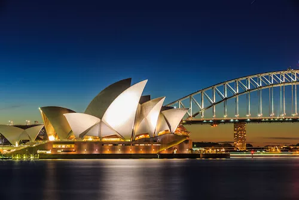
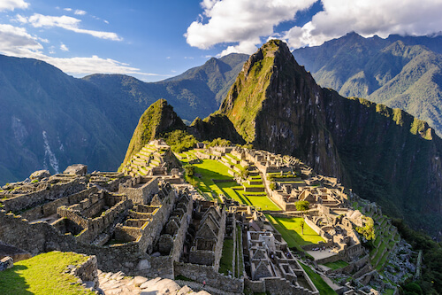

Here are the Top 10 famous landmarks in the world. These man-made landmarks and monuments are so well known because of their location or special architecture and of course are famous attractions which would be great to visit with your family.
We choose the following landmarks as they are located on six of the seven continents on our planet: Africa, Asia, Europe, North America and South America and Oceania/Australia. These world-famous landmarks attract millions of visitors each year and are major tourist attractions.

1. Effiel Tower in France

2. Great Wall of China

3. Kremlin in Russia

4. Leaning Tower of Pisa in Italy

5. Great Pyramid of Giza in Egypt

6. Sydney Opera House in Australia

7. Statue of Liberty in theUSA

8. Taj Mahal in India

9. Moai on Easter Island / Chile

10. Machu Picchu in Peru